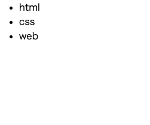
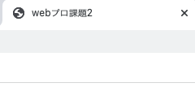

- head要素
head要素とは,HTMLページに入れておきたいが見せたくない全てのものを入れておく働きをする。
例えば、検索結果に出したいページのキーワードや説明や、ページのスタイルを指定するためのCSSや、
文字エンコーディングの定義などが含まれる。
<head>
<meta charset="utf-8">
<title>webプロ課題2<title>
<head>
- ul要素
ul要素は、順序なしのリストを表す。
順序なしリストは、リスト項目の先頭に記号が表示されるリストである。
<ul>
<li>html<li>
<li>css<li>
<li>web<li>
<ul>
例

- title要素
title要素は、タイトルを指定するものとなっており、ページが読み込まれたブラウザーのタブに表示される。
<title>webプロ課題2<title>

- br要素
強制的に行を区切り開業するための要素となっている。
lear属性を用いることで、画像やその他のオブジェクトに対するテキストの回り込みを解除することができる。
<hl>強制的に行を区切り開業するための要素となっている。<br><br>
lear属性を用いることで、画像やその他のオブジェクトに対するテキストの回り込みを解除することができる。<hl>
例
強制的に行を区切り開業するための要素となっている。
lear属性を用いることで、画像やその他のオブジェクトに対するテキストの回り込みを解除することができる。